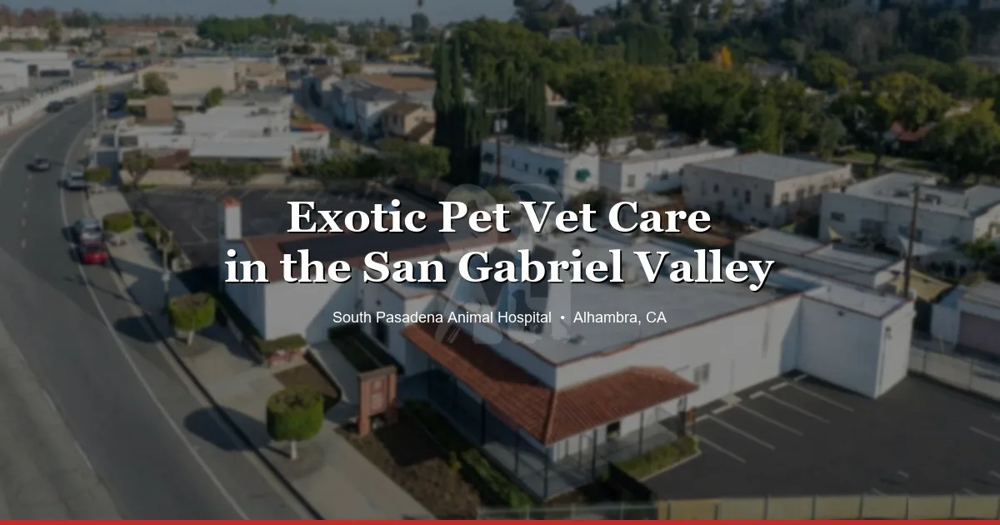

April 2, 2026 · 7 min read
Exotic Pet Vet Care in the San Gabriel Valley

If you've got an exotic pet somewhere in the San Gabriel Valley, you've probably already discovered the hard part: finding a vet who actually sees your animal. You call a clinic, they ask what kind of pet, you say "bearded dragon" or "guinea pig," and there's a pause. Then they tell you they only do dogs and cats. Maybe they give you a number for someone 45 minutes away.
We hear this story all the time. People in Monterey Park, San Gabriel, Rosemead, Arcadia, Temple City — they call us after striking out with three or four other clinics. Exotic pet care is a big part of what we do at South Pasadena Animal Hospital, and we're right here in the SGV.
What We Mean by "Exotic Pets"
When we say exotic, we basically mean anything that isn't a dog or cat. That includes:
- Reptiles — bearded dragons, ball pythons, leopard geckos, turtles, tortoises, chameleons, blue-tongue skinks
- Birds — parrots, cockatiels, budgies, conures, lovebirds, finches, African greys, cockatoos
- Rabbits
- Guinea pigs
- Hamsters — Syrians, dwarfs, Roborovskis
- Chinchillas, hedgehogs, rats, mice
If it's small, scaly, feathered, or furry and not a dog or cat — we probably see it. If you're not sure whether we can see your pet, just call. The answer is almost always yes.
Why It Actually Matters Who You Go To
This isn't about being picky. Exotic animals are genuinely different from dogs and cats in ways that affect how they're diagnosed and treated. A rabbit's digestive system has nothing in common with a dog's. Some antibiotics that are perfectly safe for cats will kill a guinea pig — we're not exaggerating. Reptile bloodwork doesn't look anything like mammal bloodwork. The diseases are different, the medications are different, the dosing is different.
A vet who mainly sees dogs and cats and occasionally takes on a bearded dragon isn't going to catch the same things we would. And we're not saying that to be dismissive of other clinics — it's just that exotic animals need someone who sees them regularly and knows what normal looks like for each species. That's us.
What We See Most Often
After seeing exotic pets day in and day out, certain patterns come up again and again:
- Parasites in new reptiles — almost every bearded dragon or ball python from a pet store has them. A fecal test on the first visit catches this before it causes problems. (More on beardie health signs)
- Respiratory infections in guinea pigs — sneezing, discharge, noisy breathing. Moves fast if you don't catch it early. (When guinea pig sneezing is a problem)
- GI stasis in rabbits — the gut stops moving, and it can be fatal within 24–48 hours. This is the one we always tell rabbit owners to watch for. (Full guide to rabbit GI stasis)
- Feather plucking in birds — could be medical, could be behavioral, usually some of both. Needs a proper workup to figure out what's going on. (Why birds pluck feathers)
- Dental problems in rabbits and guinea pigs — their teeth grow continuously, and overgrown teeth cause way more problems than people expect
- Metabolic bone disease in reptiles — from bad UVB lighting or not enough calcium. One of the most common and most preventable things we treat.
A lot of these are caught on a routine wellness exam before they turn into an emergency. That's the whole point of bringing your exotic pet in — even when they look fine.
Right in the Heart of the SGV
We're at 3116 W Main St in Alhambra, just off the 10 freeway. If you're anywhere in the San Gabriel Valley, you're close.
Most of our exotic pet clients come from within about 15 minutes of us. Monterey Park is right next door — maybe 10 minutes depending on traffic. San Gabriel, same thing. Rosemead is about 12 minutes up the 10. Arcadia and Temple City are a quick 12–15 minute drive. South Pasadena is barely 8 minutes away. People come from Highland Park, San Marino, Eagle Rock, and Pasadena too — all within a short drive.
The SGV is also one of those areas where a lot of people have exotic pets but don't realize there's a vet nearby who sees them. We've had owners tell us they'd been driving 30–40 minutes to the west side or out to the Inland Empire because they didn't know we were here. We're here.
A Big Exotic Pet Community
The San Gabriel Valley has one of the biggest exotic pet communities in LA county. Between the local pet stores, the reptile expos, and the active breeder community, there are a lot of exotic animals in this area. We see everything from someone's first-ever hamster to a 30-year-old cockatoo that's been in the family for generations.
A lot of first-time exotic pet owners don't even know their pet needs a vet. If you just brought home a bearded dragon from a pet store in Arcadia or picked up a guinea pig from a breeder in San Gabriel — a wellness exam in the first week or two is the single best thing you can do for them. It catches parasites, flags husbandry issues, and gives you a baseline for their health going forward.
What to Expect at Your First Visit
If you've never brought an exotic pet to the vet, the whole process might feel unfamiliar. We get that. The short version: we'll do a physical exam, ask about your setup and diet, probably run a fecal test for parasites, and walk you through anything that needs adjusting. It's straightforward and we try to keep it stress-free for both you and your pet.
We wrote a full guide on what to expect at your exotic pet's first vet visit if you want the detailed breakdown — including what to bring and how to transport different species.
No Surprise Bills
One of the things we hear from people is that they're nervous about cost. Fair enough. We post our exam prices on our pricing page so you know what you're walking into before you book. No hidden fees, no upselling. We'll tell you what we recommend, what it costs, and let you decide.
How to Book
You can book online or call us at (626) 441-1314. We're currently accepting new clients for exotic pet appointments, even though we're otherwise closed to new clients for dogs and cats.
If you've got an exotic pet in the SGV and you've been putting off finding a vet — or you didn't know you needed one — give us a call or book online. We see reptiles, birds, rabbits, guinea pigs, hamsters, and more at our Alhambra clinic, and we'd be happy to help.